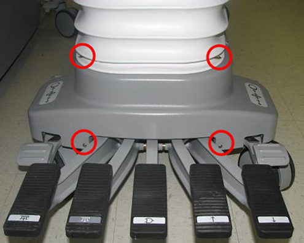
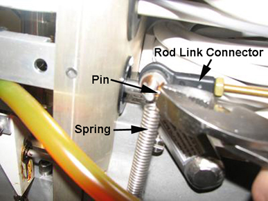
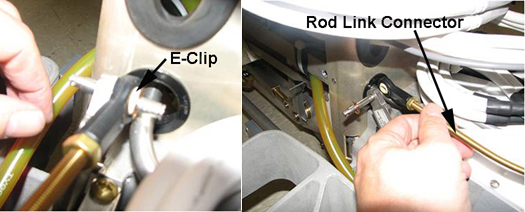
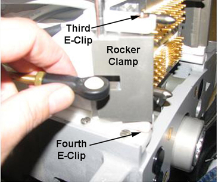

Operating Documentation
Direction 5670006, Rev# 1
Module Version 3.0, Version Date 6/28/11
Operating Documentation |
| ||||
| Personal injury | ||||
| Severe injury can occur if the table is accidentally lowered during maintenance. | ||||
| when performing maintenance with the table in the up position, make sure the lock bar is engaged. |
The following procedure describes how to remove and replace the Pedal Link Bar Connector that operates the foot pedal to dock the Patient Table electrically.
Illustration 1: Foot Pedal to Dock Patient Table

Undock the Patient Table from the magnet, and remove it from the Magnet Room.
Remove the two screws that fasten the left and right Lower Base Side Covers to the Table.
Illustration 2: Patient Table Covers (Left Side Shown)

Remove both the left and right Lower Base Side Covers by lifting up and pulling out to release the Velcro® securing each to the Bellows. For more information, refer to Patient Table Upper and Lower Base Side Cover Removal.
Remove the four screws (shown below) that secure the Rear Base Cover to the Table base and the bellows.
Illustration 3: Screws Securing Rear Base Cover

Raise the Patient Table to the maximum height.
Lower the Table Lock Safety Bar shown below. Lower the Table and verify that all weight is resting on the lock bar.
Remove the spring (shown below) attached to the Pedal Link Bar Connector at the rear of the Patient Table.
Illustration 5: Spring Removal

Remove the E-clip that secures the Pedal Link Bar Connector to the pedal that electrically docks the Patient Table.
Illustration 6: Pin Removal from Pedal Link Bar Connector

Pull the Link Down Bar (shown below) up to allow access the Pedal Link Bar Connector. Push and remove the pin (shown in Illustration 6) from the Pedal Link Bar Connector.
Illustration 7: Link Down Bar

Move the Pedal Link Bar to access screws on the Block Lift. Remove the two screws securing the Block Lift to the Pedal Link Bar Connector. Remove the Block Lift.
Disconnect the Sensor Cable or Up Limit Link.
Push in on the Up Limit Rod plunger to open the hole in front of the Table.
Guide the Pedal Link Bar Connector through the Up Limit Rod hole in front of the Table.
Install the new Pedal Link Bar Connector by reversing the above steps.
The following procedure explains how to remove and replace the defective rocker clamp, rod link connector or shaft rocker on the Patient Table.
Undock the Patient Table from the magnet, and remove it from the Magnet Room.
Remove the two screws that fasten the left and right Lower Base Side Covers to the Table. (See Illustration 2.)
Remove both the left and right Lower Base Side Covers by lifting up and pulling out to release the Velcro® securing each to the Bellows. For more information, refer to Patient Table Upper and Lower Base Side Cover Removal.
Raise the Patient Table to the maximum height.
Lower the Table Lock Safety Bar. Lower the Table and verify that all weight is resting on the lock bar. (See Illustration 4
Remove the spring and the pin on the defective Rod Link Connector.
Illustration 12: Spring and Pin on Rod Link Connector

Remove the inner E-clip and the back portion of the Rod Link Connector as shown.
Illustration 13: Rod Link Connector Removal

Remove the two E-clips securing the defective Shaft Rocker to the front of the Link Rod Connector, and remove the Shaft Rocker.
Illustration 14: E-Clips on Shaft Rocker

Remove the front portion of the defective Rod Link Connector shown in Illustration 13.
At this point, if one of the Rocker Clamps (shown below) requires replacement, remove the two E-clips securing it to the Table base.
Illustration 15: Rocker Clamp Removal

Replace each of the parts described in this section by reversing the above steps.